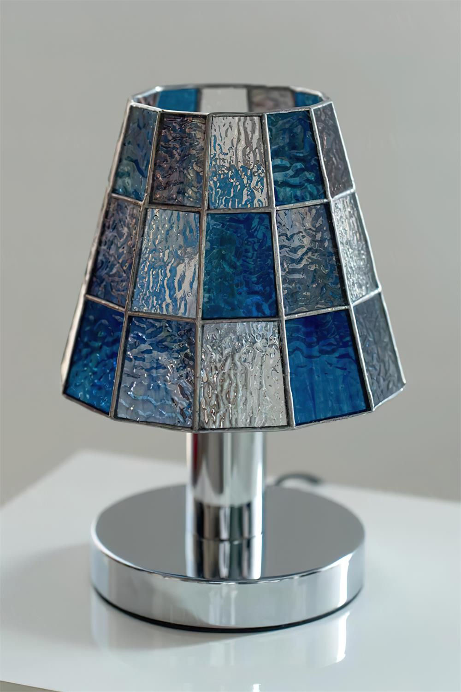
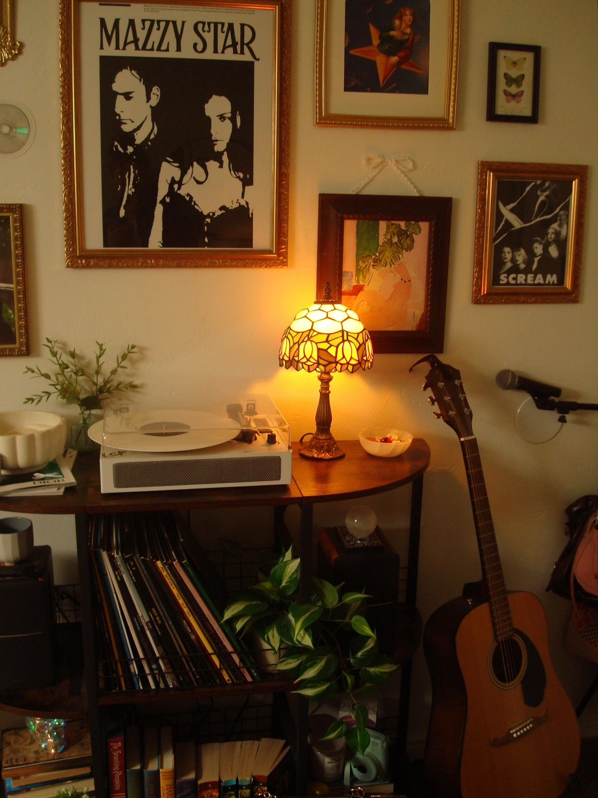
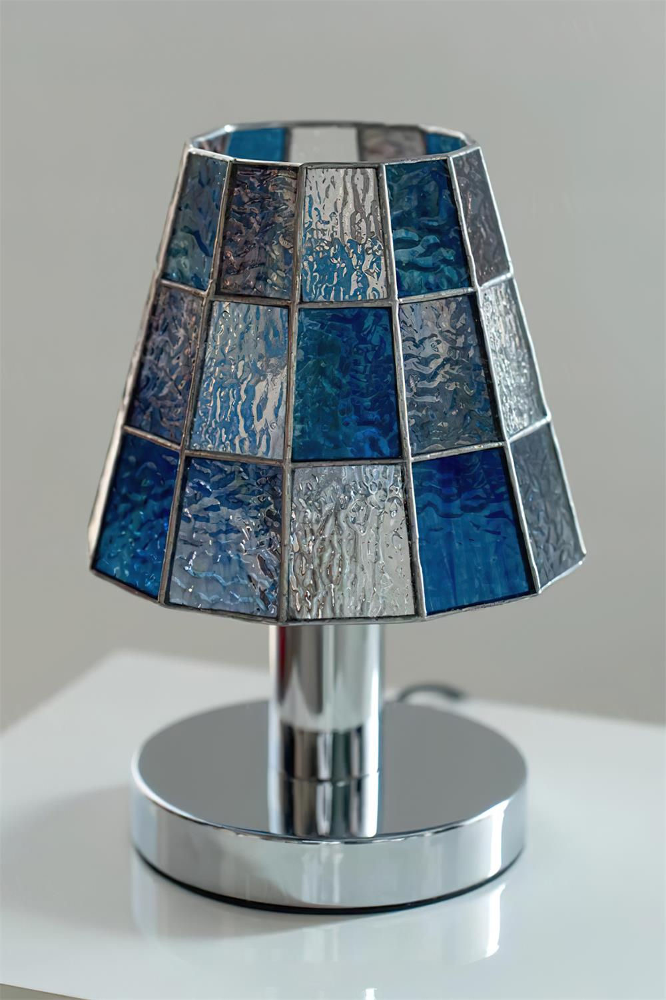
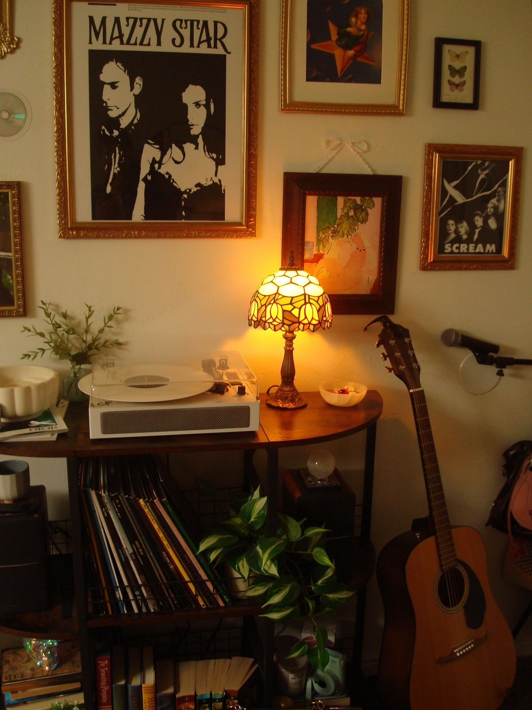
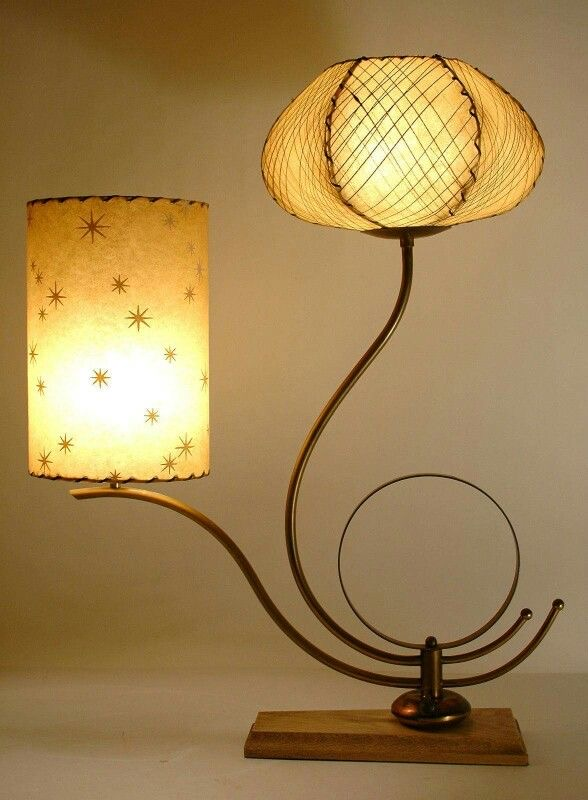
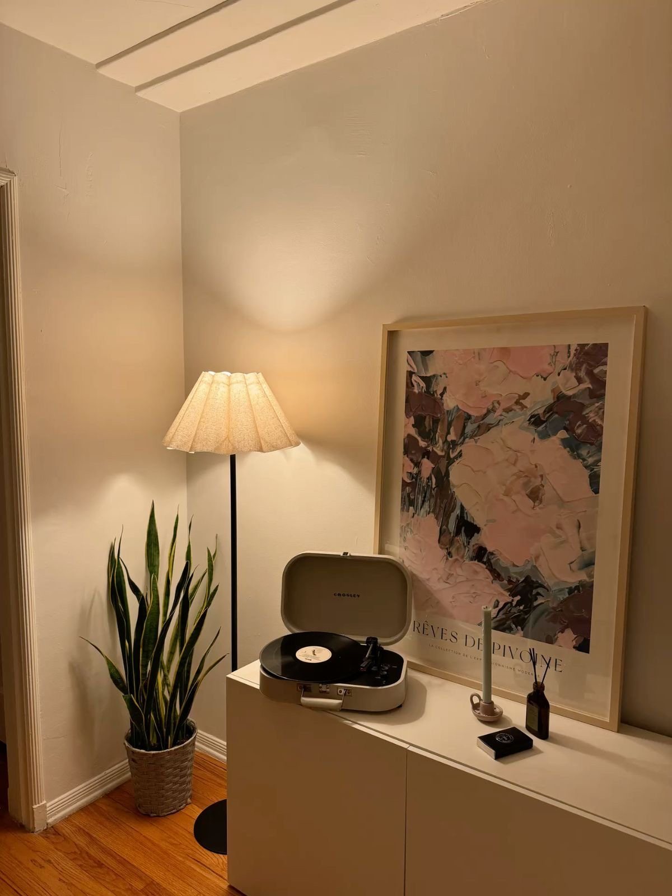
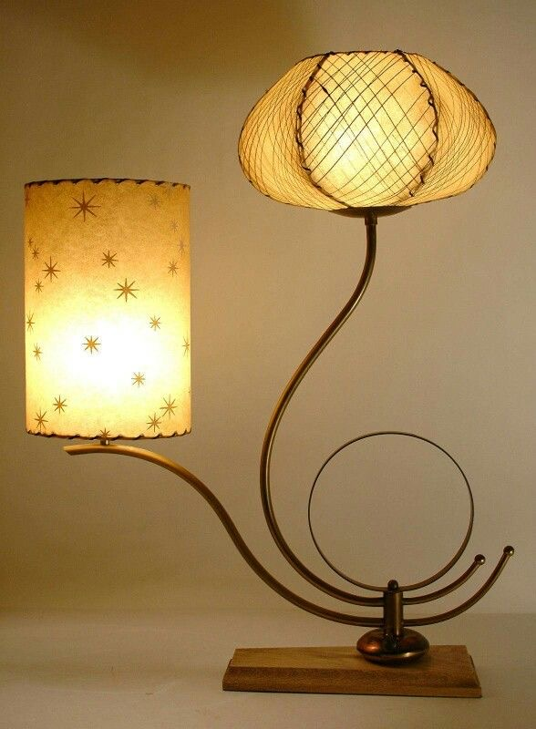
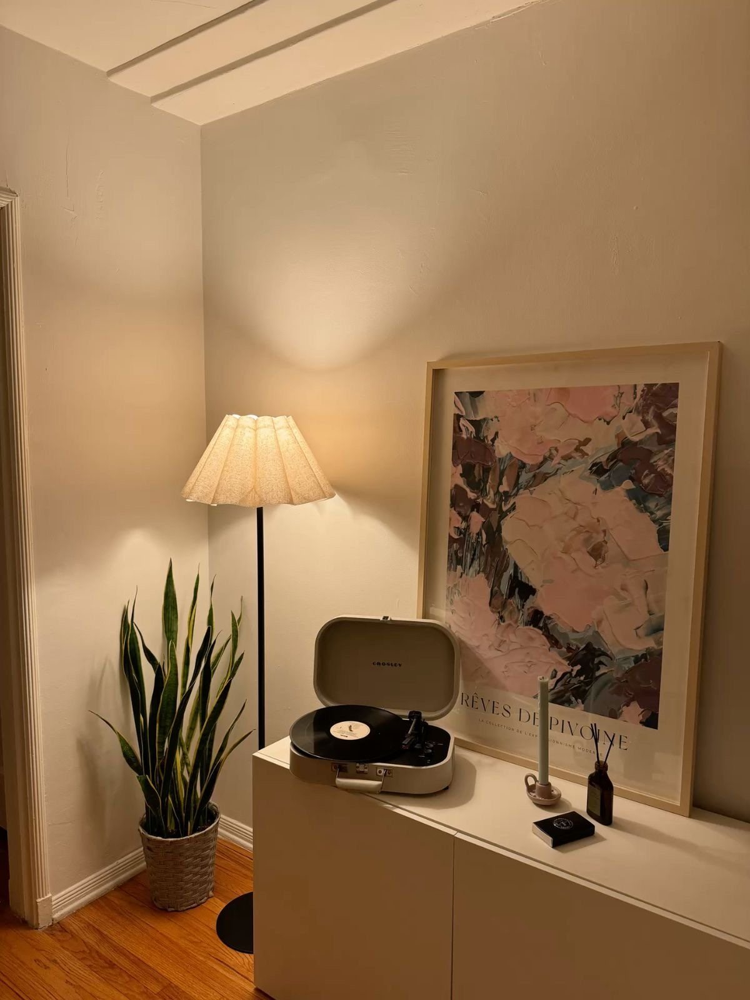

Iluminação Aconchegante
A iluminação é um dos elementos mais importantes na composição de um ambiente. Mais do que funcional, ela tem o poder de transformar a atmosfera de um espaço — trazendo conforto, sofisticação e personalidade. Lustres e luminárias, em especial, tornam-se protagonistas discretos que iluminam e decoram ao mesmo tempo. Inspire-se com essas ideias de luzes que valorizam cada detalhe da sua casa.
 



 


